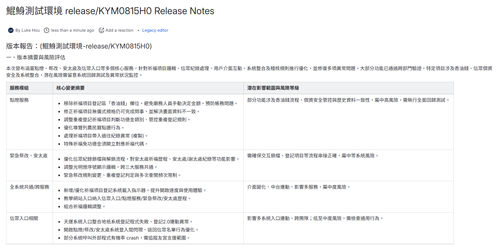

版本發布後，你的QA團隊是在測試，還是在考古？
我如何打造一個AI助理，自動將數百張Jira tickets轉化為精準的QA測試計畫，將每次版更的準備時間從數小時縮短至數分鐘，讓品質保證(QA)真正成為價值的守門員。
The Challenge: 資訊洪流中的品質守門員
軟體版本發布後，QA 團隊面臨巨大挑戰：如何在數十到上百張 Jira tickets 中，快速找出核心變動、評估風險、定義測試範圍？傳統手動整理不僅效率低下，更容易遺漏關鍵的回歸測試點，成為影響產品質量與上市時程的瓶頸。
時間壓力
QA需要在極短時間內消化大量資訊，手動整理耗費大量時間，壓縮了實際測試執行的時間。
資訊不對稱
開發紀錄散落各處，QA難以快速掌握每個修改的完整來龍去脈，導致測試覆蓋不全。
風險遺漏
在資訊洪流中，高風險的修改可能被忽略，導致潛在的線上問題，增加維運成本。
The Solution: 賦能QA的AI測試策略家
我開發了一套自動化流程，作為 QA 團隊的「AI 測試策略家」。它能主動消化繁雜的版更資訊，並產出聚焦、 actionable 的測試情報，讓 QA 從資訊的被動接收者，轉變為品質策略的主導者。
AI 全局洞察
AI 自動讀取本次版更的所有 Jira tickets，生成高度濃縮的版本摘要，讓 QA 在短時間內掌握全局。
AI 風險聚焦
AI 深入分析每張 ticket 的內容，智能建議需要重點回歸測試的功能，並生成初步的驗證清單。

無縫資訊同步
所有分析結果會被自動發布到 Confluence，確保 QA、PM、開發者之間的資訊完全同步，降低溝通成本。

The Impact: 加速交付，提升品質
這個 AI 助理不僅提升了 QA 的工作效率，更對整個軟體交付流程產生了正面影響。
測試準備加速
-90%
將 QA 團隊每次版更的資訊整理與分析時間，從平均 1-2 小時縮短至 5 分鐘以內。
風險覆蓋提升
+30%
透過 AI 建議，能更有效地識別出潛在高風險的修改，提升了關鍵功能的測試覆蓋率。
交付週期縮短
Faster
加速了回歸測試階段，減少了因資訊不全導致的延誤，有助於縮短整體產品上線週期。
核心做法
此工作流透過 n8n 串連 Jira 與 Confluence 的 API，並將取得的資料送交大型語言模型 (LLM) 進行分析。
- 抓取 Jira 資訊: 使用 JQL (Jira Query Language) 查詢抓取指定版本的所有 Jira Tickets。
- AI 分析與生成: 將 Tickets 內容批次送入 AI 模型，透過精心設計的 Prompt，分別生成「版本摘要」、「單一 Ticket 摘要」與「QA 測試重點」。
- 發布至 Confluence: 將 AI 生成的結構化內容，透過 Confluence API 自動建立或更新成一個格式精美的 Release Notes 頁面，確保資訊同步。